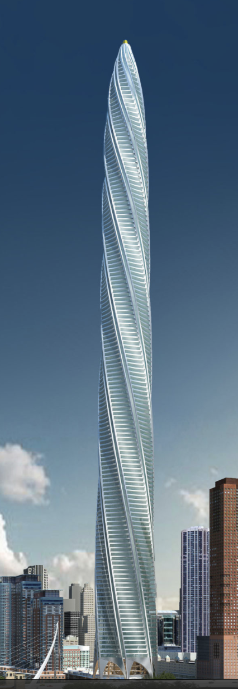
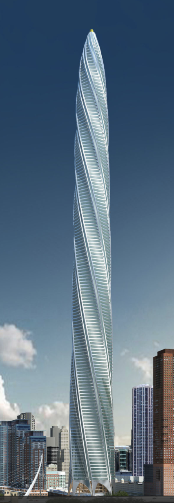

Part 1: Final Project Proposal
CONCEPT
For my final project I wanted to create a series of pieces. After much thought I
decided I wanted to make two sets of chess pieces. Santiago Calatrava is one of my
favorite architects and his projects Turning Torso and Chicago Spire were the design inspirations for this project. The aim is to create a
more sculptural and modern version of these classic pieces.
 Turning Torso
Chicago Spire
Turning Torso
Chicago Spire
RENDERING
Below is a rendering of the intended final design. I hope to create one set
that is gold and one set that is black, both in PLA filament.

TASKS


TIMELINE
As shown above, the design and rendering for this project is complete. For this process I plan to 3D print each set in 3 groups each.
The first group will be all 8 pawns (approximate printing time: 4 hrs. and 15 mins.).
The second set will include both bishops,
both knights and both rooks for a total of 6 pieces (approximate printing time: 6 hrs and 15 mins.).
The third set will be the
king and queen (approximiate printing time: 8 hrs.).
Total print time for each set is about 18.5 hours. If time wasnt an issue I would print
one set and cast the other. However, casting would take a great deal of time to print molds and cure silicone for 6 separate pieces, and I want to ensure there
is enough room in my timeline in case something goes wrong. Because I am using two different
colors for these sets, for the interest of time, I am going to print the gold set then the black set instead of printing by the piece shape. Because
the sketches are finished in Rhino, my goal is to complete one set each week. To give myself some extra time in case something goes awry, I plan to
have the first set finished by Monday, May 24th, and the second set by Monday May 31st.
If I get completely off track for this project and the printing goes sideways my contingency plan is to print one set instead of two. If I
more than 2 weeks I would make one set in PLA and one set cast in plaster
BOM and sourcing schedule


Using the MeshtoNURB command for all three objects I was able to successfully turn them into polysurfaces. I then aligned all three objects in the top view using concentric align. Once all three pieces were placed where I wanted, I used the BooleanUnion command. I examined the new object and it was closed. I exported it with a 0.001mm tolerance.